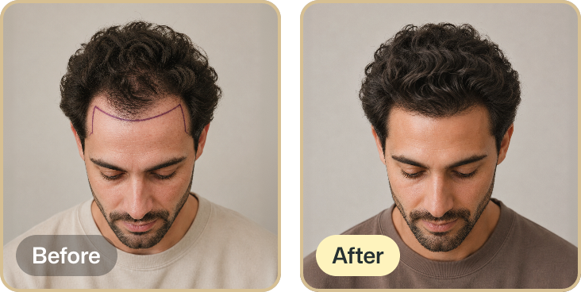
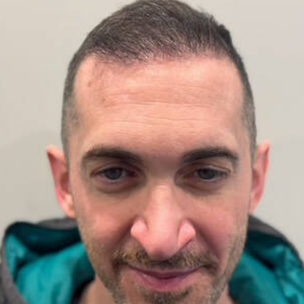

Free consultation
Meet a physician in person or by video. Honest assessment of your scalp and donor area, and a custom plan with no obligation.
Step 1Doctor-led FUE, FUT, and ARTAS robotic hair restoration, right here in Cincinnati. Board-certified care and follow-up you can drive to, no overseas gamble.
Doctor-led, board-certified care, right here in Cincinnati
Turkey ads make it look cheap and easy. What they leave out is who examines you beforehand, who is accountable after, and how far you have to travel if something needs a second look.
| What to compare | Wolf Hair, Cincinnati | Overseas clinic |
|---|---|---|
| Meet your surgeon first | Yes, before you commit | Often not until the day |
| Verify credentials | Board-certified, ISHRS-affiliated | Hard to verify from abroad |
| Follow-up and aftercare | A short drive away | A flight away |
| Travel and recovery | Sleep in your own bed | Recover in a hotel abroad |
| If something needs attention | Same team, same city | Difficult once you are home |
Wolf Hair Restoration is on Mason Montgomery Rd in Cincinnati, an easy drive from the suburbs and a worthwhile one from further out. Many patients come from Dayton, Columbus, and Northern Kentucky for doctor-led care they can return to.
Meet a physician in person or by video. Honest assessment of your scalp and donor area, and a custom plan with no obligation.
Step 1Local anesthesia keeps you comfortable. No overnight stay, home the same day, and most patients are back to normal activity within a few days.
Step 2Your follow-up is a short drive, not a flight. The same Cincinnati team supports your regrowth over the months ahead. Individual results vary.
Step 3Individual results vary.
You can tell they plan everything carefully, especially the hairline. It looks completely natural.
Felt taken care of the whole time. What stood out was the follow-up after the procedure.
Very professional team. Everything was explained clearly from the start.
Dr. Wolf has dedicated his career to hair restoration since 1990 and is recognized by his peers across the field.
A board-certified physician with more than 20 years of experience, trained directly under Dr. Wolf.
Real patient results from our Cincinnati practice. Drag the handle to compare before and after. Individual results vary.

Wolf Hair Restoration performs hair transplants at 11877 Mason Montgomery Rd., Suite A, Cincinnati, Ohio 45249. The practice serves Greater Cincinnati including Mason, West Chester, Blue Ash, and Hamilton, along with Dayton, Columbus, and Northern Kentucky. Call 513-774-0400 to book a free consultation.
A local procedure lets you meet your surgeon before you commit, verify their credentials, and return for follow-up without a flight. Wolf Hair is a board-certified, ISHRS-affiliated practice in Cincinnati, so the same team that performs your procedure is here if anything needs attention.
Cost depends on how many grafts you need. Most procedures range from a few thousand dollars to over ten thousand dollars, with an entry package starting at $2,990 for eligible candidates. Interest-free financing is available and your consultation is free.
Yes. Wolf Hair Restoration treats both men and women, including women with diffuse thinning. A consultation determines whether a transplant, a non-surgical treatment such as PRP, or a combination is the best fit.
Book a free, no-pressure consultation at our Cincinnati clinic. We will review your options, answer your questions, and give you an honest assessment. In person or by video.
Takes under a minute. We will call to find a time that works.
By submitting this form, you authorize Wolf Hair Restoration to text/call the number you provide for informational/transactional messages, possibly using automated means. Msg/data rates apply, msg frequency varies. Consent is not a condition of purchase. See terms and privacy policy. Text HELP for help and STOP to unsubscribe.
If you opt in to promotional messages on the form, you also authorize Wolf Hair Restoration to text/call you for promotional messages, possibly using automated means. Msg/data rates apply, msg frequency varies. Consent is not a condition of purchase. See terms and privacy policy. Text HELP for help and STOP to unsubscribe.